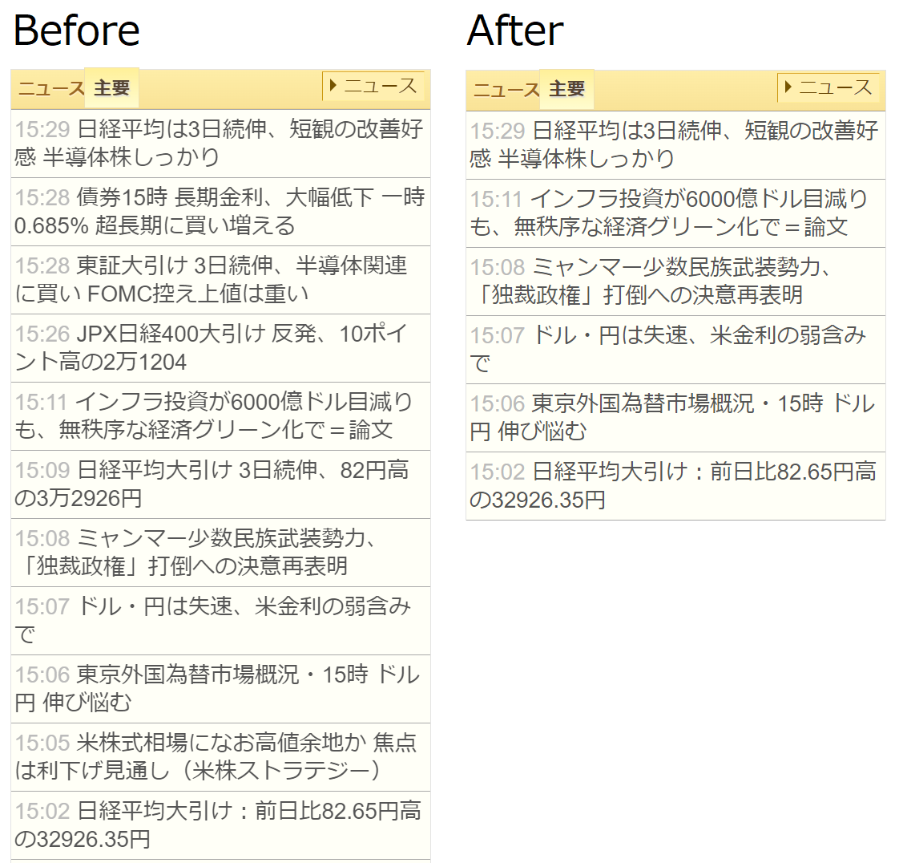
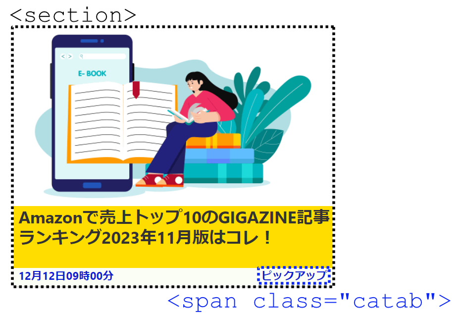

uBlock Origin と Stylus の設定例
概要
uBlock Origin と Stylus を使って Web ページをコントロールする実例まとめ。特に広告以外の要素を非表示にしたり改変する方法について。
uBlock Origin
uBlock Origin はインストールするだけで多くの広告が非表示になります。広告以外の要素を非表示にしたい場合にもブラウザの右クリックメニューから要素選択ダイアログを開いて非表示にする要素を選択すれば可能です。しかしながら複数のドメインにまたがる要素や条件を含めたい場合などは設定を記述する必要があります。以下のスニペットを設定ファイルにコピペすることで実際の動作を確認できます。
ID指定で要素非表示
以下の記述で、全てのページから id=“gdpr-banner” 要素を非表示にすることができます。ライブドアブログ系のページで見かける Cookie 確認ダイアログには “gdbr-banner” という ID が指定されているため、この記述一つでドメインに関わらず非表示になります。
###gdpr-banner
JavaScript 無効化
以下の記述で jp.reuters.com において JavaScript 読み込みを無効化します。jp.reuters.com はお行儀の悪い挙動をするページで、スクロールを禁止してきたり、キーボード入力を乗っ取ってきたりします。(キーボード入力が乗っ取られるとブラウザのキーボードショートカットが使えなくなります) 個別に対策をするのが面倒なので JavaScript 丸ごと止めるのが簡単です。なお一部画像がロードされなくなります。またブラウザの設定でも同じことができます。
||jp.reuters.com^$script
eow.alc.co.jp のように JavaScript ファイルではなくインラインスクリプトとして実装されている場合は以下のように記述することで JavaScript 実行を禁止できます。この記述によって eow.alc.co.jp における PageUp/PageDown キーを押したときのスクロールアニメーションを無効化することができます。また eow.alc.co.jp ではブラウザで JavaScript をブロックすると JavaScript を有効化する旨のメッセージが表示されますが、以下の記述でブロックした場合はそのメッセージが表示されることはありません。
||eow.alc.co.jp^$inline-script
指定ドメインへのリンク要素を非表示
以下の記述で nikkei225jp.com にある li 要素のうち、有料記事サイト moneyworld.jp と nikkei.com への a 要素 を含むものを非表示にします。
nikkei225jp.com##li:has(a[href*="moneyworld.jp"])
nikkei225jp.com##li:has(a[href*="nikkei.com"])
li 要素はニュースのヘッドラインを並べるために使われているので、この記述を追加すると実際の表示が以下のように変化します。

条件に当てはまる要素を非表示
以下の記述で gigazine.net にある section 要素のうち、“広告"という文字を含む “catab” クラス の span 要素を含むものを非表示にします。
gigazine.net##section:has(span[class="catab"]:has-text("広告"))
gigazine.net における記事リンクは section 要素 と “catab” クラスの span 要素が入れ子になっているため、この記述で広告記事を非表示にできます。

Stylus
非表示以外のスタイルの適用・上書きは uBlock Origin ではできないので Stylus での設定が必要になります。こちらも以下スニペットをコピペすることで動作の確認ができます。
テキスト選択有効化
以下の記述でテキスト選択を無効化しているページにおいて、テキスト選択を強制的に有効化することができます。画像のテキスト選択ができるようになったりはしません。
* {
user-select: auto !important;
-webkit-user-select: auto !important;
-webkit-user-drag: auto !important;
}
スクロール有効化
以下の記述でスクロールを禁止しているページにおいて、スクロールを強制的に有効化します。ダイアログをOKするまでスクロールを無効化するようなページでは、ダイアログを非表示にするとスクロール無効だけ残ってしまうのでそれを上書きします。これで有効化できないページもあります。（html・body 要素ではない要素にスタイルが指定されていたり JavaScript でイベントを握りつぶしていたりする場合など）
html {
overflow: visible !important;
}
body {
overflow: visible !important;
}
指定ドメインへのリンク要素改変
以下の記述で有料記事サイト www.asahi.com を含むリンク要素に赤色打ち消し線を表示します。タイトルは表示したいが、選択する前にリンク先が有料記事サイトだと分かるようにしたい場合に便利です。
a[href*="www.asahi.com"] {
text-decoration: line-through red;
}